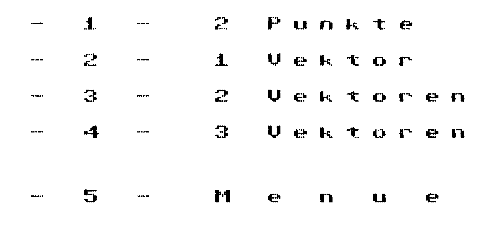
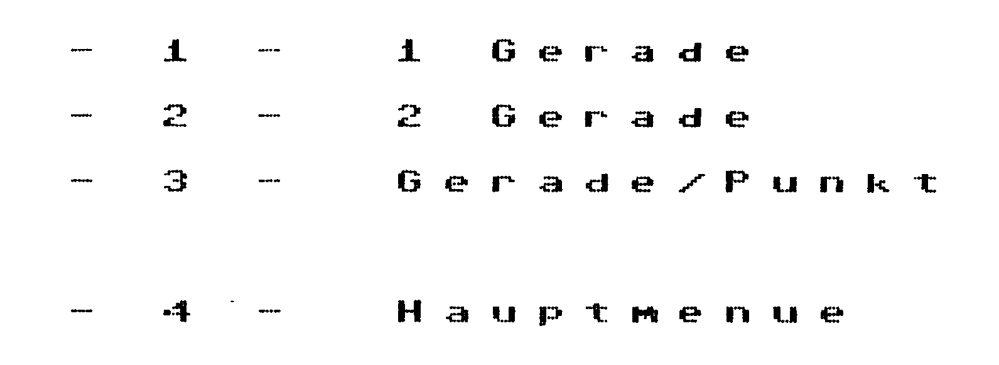
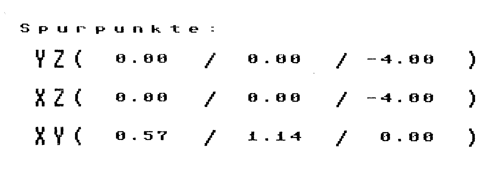
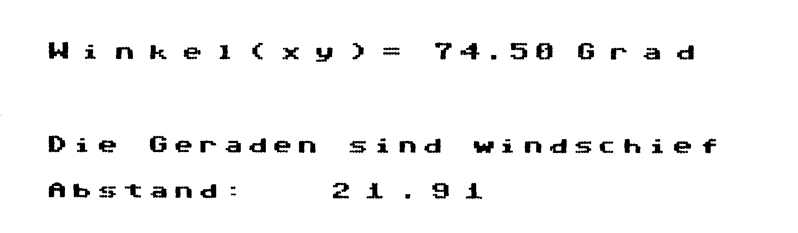
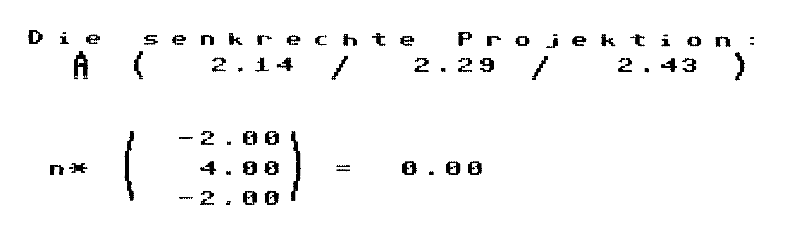
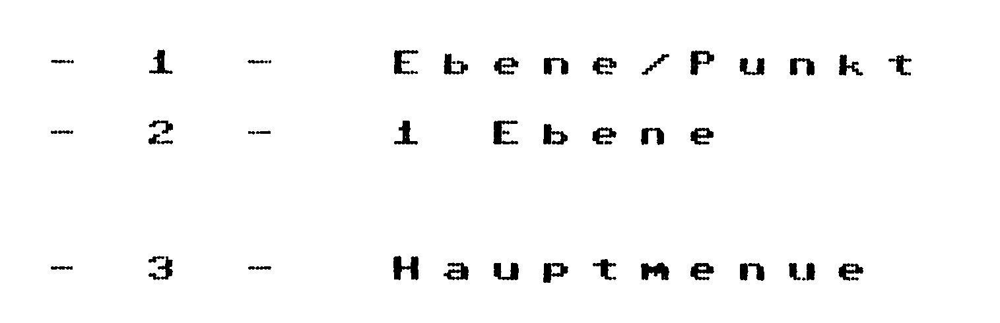
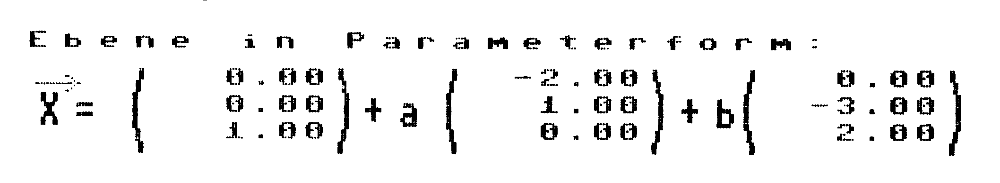
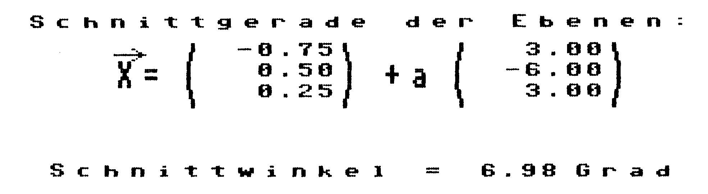

Vektorrechnung aus dem Effeff
Mit Mathefix können fast alle Aufgaben aus dem Bereich der Vektorrechnung im dreidimensionalen Raum gelöst werden.
Alle erdenklichen Schnittprobleme von einer Geraden mit einer Ebene, zwei Geraden oder zwei Ebenen sind ganz einfach zu lösen und benötigen nicht mehr seitenlange Berechnungen. Auch Schnittwinkel, Projektion von Punkten und Umrechnungen von der Parameterform in die Normalenform der Ebene stellen kein Problem mehr dar. Jede Ausgabe erfolgt, sinnvoll auf zwei Stellen gerundet, auf dem Bildschirm, und kann mit der F1-Taste als Hardcopy auf jedem Drucker ausgegeben werden, der sich von Simons Basic ansprechen läßt. Das Programm arbeitet durchgehend mit HiRes-Grafik.
Wichtige Eingabehinweise:
Das Programm (Listing) benötigt Simons Basic. Um den C 64 ebenfalls auf Kleinschrift umzustellen, geben Sie im Direktmodus den Befehl »CSET 1«. Beachten Sie bitte den REM-Kommentar in Zeile 15. Ab Zeile 1020 steht am Anfang der Strings öfter ein kleines reverses »b«. Es entsteht durch die Tastenkombination »CTRL« + »B«. Das reverse »H« (zum Beispiel in Zeile 1441) ist die F7-Taste.
Allgemeine Hinweise:
In allen Menüs genügt das Drücken der gewünschten Taste um in das nachfolgende Menü zu kommen oder die Berechnung zu beginnen. Auf die Aufforderung »WEITER MIT RETURN« und »ZURÜCK MIT RETURN« drücken Sie bitte die RETURN-Taste. Bei der Eingabe Ihrer Zahlenwerte schließen Sie bitte jede Zahleneingabe mit einem RETURN ab.
Durch das Betätigen der Funktionstaste F7 innerhalb der Werteeingabe gelangen Sie jeweils in das vorherige Menü zurück.
Bei »ZURÜCK MIT RETURN« können Sie durch drücken der SPACE-Taste dieselbe Rechnung mit anderen Zahlenwerten wiederholen. Jedesmal, wenn von Ihnen eine Eingabe verlangt wird, können Sie mit der Funktionstaste F1 eine Hardcopy des aktuellen Bildschirminhaltes auf dem Drucker erzeugen.
Im Programm wird unter »n« der Punkt mit den Koordinaten (X/Y/Z) verstanden.
Das Programm enthält eine Anleitung in Kurzform.
| Einsprungadressen: | Übergabevariablen: | Ausgabe: |
|---|---|---|
| 29000 Punkte/Gerade |
$$ g: \vec{x} = \begin{pmatrix} ax \\ ay \\ az \end{pmatrix} + \lambda \cdot \begin{pmatrix} ux \\ uy \\ uz \end{pmatrix} $$
P(p1/p2/p3) |
Abstand: FP x$ (p/s/Winkel) Proj.: F(f1/f2/f3) Ebene: $$ x1 \cdot x + x2 \cdot y + x3 \cdot z = x $$ |
| 29200 Gerade/Gerade |
g: siehe oben h: siehe oben mit bx, by, bz und mit vx, vy, vz |
Abstand: FP x$ siehe oben Schnittpunkt: S(sx/sy/sz) |
| 30000 Punkt/Gerade |
$$ E: nx \cdot x + ny \cdot y + nz \cdot z = c $$
P(xe/ye/ze) |
Abstand: FP x$ siehe oben Proj.: F(gx/gy/gz) |
| 30600 Ebene/Ebene |
$$ E: n1 \cdot x + n2 \cdot y + n3 \cdot z = ce $$ $$ F: m1 \cdot x + m2 \cdot y + m3 \cdot z = cf $$ |
Abstand: EF x$ siehe oben Schnittgerade: $$ g: \vec{x} = \begin{pmatrix} s1 \\ s2 \\ s2 \end{pmatrix} + \lambda \cdot \begin{pmatrix} s4 \\ s5 \\ s6 \end{pmatrix} $$ |
| 30200 Gerade Ebene |
E: siehe oben $$ g: \vec{x} = \begin{pmatrix} g1 \\ g2 \\ g3 \end{pmatrix} + \lambda \cdot \begin{pmatrix} ux \\ uy \\ uz \end{pmatrix} $$ |
x$ siehe oben Schnittpunkt: S(gx/gy/gz) |
| 18000 Programmkopf erstellen | ||
| 18200 Titelbild erstellen | ||
| 19000 Eingaberoutine | ||
| 18500 Zurück mit RETURN | ||
| 18600 Get/Copy-Abfrage | ||
| 18700 Print-Using | ||
| 18550 Fehler | ||
| 28500 Weiter mit RETURN | ||
|
Variablenliste: Siehe Übergabevariablen bei den Unterprogrammen. Die Eingaben sind immer im Feld x( ) enthalten. Alle restlichen Variablen haben keine große Bedeutung, sie dienen nur als Laufvariablen oder zur Zwischenspeicherung von Ergebnissen. |
||
Menüpunkt 1
Nun erscheint ein Untermenü (Bedienung siehe Hauptmenü).
Untermenü 1
Von Ihnen wird die Eingabe der Koordinaten von zwei Punkten erwartet.
Der Computer berechnet:
- den Vektor zwischen den beiden Punkten.
Berechnung: 2 Punkte
Untermenü 2
Von Ihnen wird die Eingabe eines Vektors erwartet.
Der Computer berechnet:
- den Winkel des Vektors gegenüber einer waagerechten Ebene
- den Betrag des Vektors
- den Einheitsvektor
Berechnung: 1 Vektor
Untermenü 3
Von Ihnen wird die Eingabe zweier Vektoren erwartet.
Der Computer berechnet:
- die Lage der Vektoren zueinander (Schnittwinkel?/parallel?/senkrecht?)
- die Fläche des Parallelogramms
- das Skalarprodukt - das Vektorprodukt
Berechnung: 2 Vektoren
Untermenü 4
Von Ihnen wird die Eingabe von 3 Vektoren erwartet.
Der Computer berechnet:
- den Wert der Determinante
- das Volumen des Parallelflachs
Berechnung: 3 Vektoren
Untermenü 5
Zurück zum Hauptmenü
Menüpunkt 2
Es erscheint ein Untermenü (Bedienung siehe Hauptmenü)
Untermenü 1
Von Ihnen wird die Eingabe der Koordinaten von einem Aufhängepunkt und dem Richtungsvektor einer Geraden erwartet.
Der Computer berechnet:
- den Winkel zur XY-Ebene
- die Spurpunkte der Geraden
Berechnung: 1 Gerade Ausgabeseite 1
Durch drücken von RETURN kommen Sie zu der zweiten Ausgabeseite.
Berechnung: 1 Gerade Ausgabeseite 2
Untermenü 2
Von Ihnen wird die Eingabe von zwei Geraden erwartet:
Der Computer berechnet:
- die Lage der Geraden zueinander (Schnittwinkel?/parallel?/senkrecht?/windschief?)
- den Schnittpunkt (wenn möglich)
Berechnung: 2 Geraden Eingabeseite
Durch RETURN kommen Sie zu der Ausgabeseite.
Berechnung: 2 Geraden Ausgabeseite
Untermenü 3
Von Ihnen wird die Eingabe einer Geraden und eines Punktes erwartet.
Der Computer berechnet:
- die senkrechte Projektion des Punktes auf die eingegebene Ebene
- Ebene durch die Gerade und den Punkt
- Abstand des Punktes von der Geraden
Berechnung: Punkt/Gerade Eingabeseite
Durch RETURN kommen Sie zu der Ausgabeseite.
Berechnung: Punkt/Gerade Ausgabeseite
Menüpunkt 4
Nun erscheint ein Untermenü (Bedienung siehe Hauptmenü)
Untermenü 1
Von Ihnen wird die Eingabe einer Ebene in Normalenform und eines Punktes erwartet.
Der Computer berechnet:
- die senkrechte Projektion des Punktes auf die eingegebene Ebene
- den Abstand des Punktes von der Ebene
Berechnung: Punkt/Ebene Eingabeseite
Untermenü 2
Es erscheint ein weiteres Untermenü.
Hier können Sie auswählen in welcher Form Sie die Ebene eingeben wollen.
Der Computer berechnet:
- die jeweils andere Ebenenform
- die Spurpunkte
- die Spurgeraden mit Winkelangaben
Berechnung: 1 Ebene Auswahl
Berechnung: 1 Ebene Eingabe 2
Menüpunkt 5
Von Ihnen wird die Eingabe von zwei Ebenen in Normalenform erwartet.
Der Computer berechnet:
- die Schnittgerade
- den Schnittwinkel
Berechnung: 2 Ebenen Eingabeseite
Berechnung: 2 Ebenen Ausgabeseite
(J. Riehn/T. Langer/og)